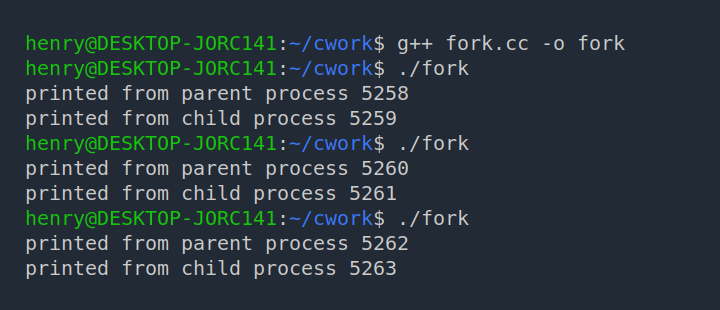
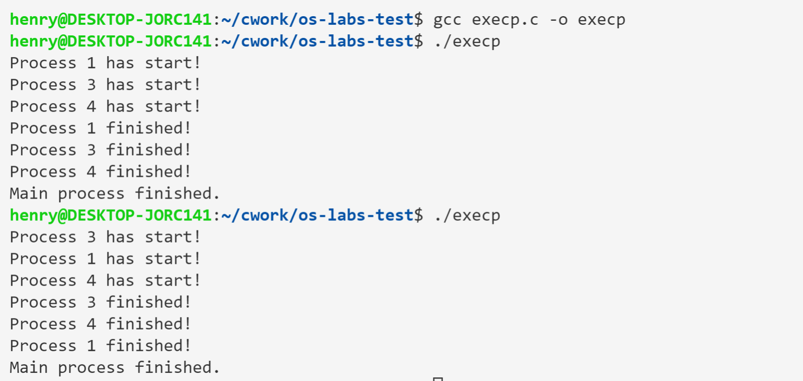
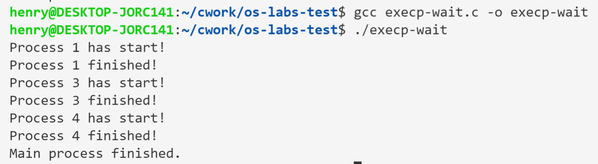

实验二：进程的初步认识
实验课时：3 学时
一、实验目的
- 熟练使用系统调用：
fork、getpid、getppid、execvp； - 设计程序，实现结果的不可再现性；使用同步原语，实现结果的可再现性；
- 设计程序，使用递归及非递归方法对系统的进程数目进行压力测试，对运行时间进行监控。
二、实验原理
1. 简单的系统调用
fork()
fork 是符合 POSIX 要求的系统调用，在大多数类 Unix 系统上都可以使用。它可以用来创建新的进程，这个新的进程称作子进程（Child）。相对的，fork 的调用者（Caller）就称为父进程（Parent）。子进程是父进程的一份拷贝，也就是说，两个进程的数据段和代码段是相同的（但是不共享这些存储空间），当前执行的代码位置也是一样的，当子进程创建完成后，两个进程都会执行 fork 之后的代码。
通过 fork 调用，可以实现程序的并发运行，也可以运行文件系统中的其他可执行程序。
事实上，内核在进行进程的拷贝时，采用的是 Copy-On-Write 的方式，即只在发生写入时才真正进行数据的拷贝。
fork()和CreateProcess()的区别：https://stackoverflow.com/questions/13839935/forking-and-createprocess- 为什么要通过 fork 来创建新的进程：https://unix.stackexchange.com/questions/136637/why-do-we-need-to-fork-to-create-new-processes/136649#136649
fork() 不接收参数，而在两个进程中均返回一个值：如果进程创建成功，则在父进程中返回子进程的 PID 值，在子进程中返回 0；否则，在父进程中返回 -1。
pid_t fork(void);
示例程序 fork-demo.cpp
#include <iostream>
#include <sys/wait.h>
#include <unistd.h>
int main() {
pid_t child_pid = fork();
if (child_pid == -1) {
perror("fork");
exit(EXIT_FAILURE);
} else if (child_pid > 0) {
std::cout << "printed from parent process " << getpid() << std::endl;
wait(nullptr);
} else {
std::cout << "printed from child process " << getpid() << std::endl;
exit(EXIT_SUCCESS);
}
return EXIT_SUCCESS;
}
程序的输出类似如下：
printed from parent process 705
printed from child process 706

需要注意，程序每次执行的结果可能都会不一样，并不能保证子进程和父进程执行的先后顺序；此外，每次执行时进程的 PID 也不尽相同。
参考链接：
wait()
调用了 wait() 的进程将一直被阻塞，直到其中一个子进程退出，或者接收到相应的信号。wait() 接收一个 int 类型变量的地址作为参数，而将返回完成了的子进程的参数。表示子进程的完成状态的标志将写入传入的 int 类型指针所指向的地址。
wait() 的执行有两种可能的情况：
- 如果调用
wait()时，有至少一个子进程正在运行，则调用者将被阻塞直至某一子进程退出，之后，调用者继续执行后续代码。 - 如果调用
wait()时没有子进程正在运行，则该次调用不产生影响。
考虑下面的程序：
#include <stdio.h>
#include <string.h>
#include <sys/types.h>
#include <sys/wait.h>
#include <unistd.h>
#define MAX_COUNT 100
#define BUF_SIZE 100
void ChildProcess(char[], char[]); /* child process declare */
int main(void)
{
pid_t pid1, pid2, pid;
int status;
int i;
char buf[BUF_SIZE];
printf("*** Parent is about to fork process 1 ***\n");
pid1 = fork();
if (pid1 < 0) {
printf("Failed to fork process 1\n");
return 1;
} else if (pid1 == 0) { /* In Child Process */
ChildProcess("First", " ");
return 0;
}
printf("*** Parent is about to fork process 2 ***\n");
pid2 = fork();
if (pid2 < 0) {
printf("Failed to fork process 2\n");
return 1;
} else if (pid2 == 0) {
ChildProcess("Second", " ");
return 0;
}
/* The parent process can do something else. */
sprintf(buf, "*** Parent enters waiting status .....\n");
write(1, buf, strlen(buf));
pid = wait(&status);
sprintf(buf, "*** Parent detects process %d was done ***\n", pid);
write(1, buf, strlen(buf));
pid = wait(&status);
printf("*** Parent detects process %d is done ***\n", pid);
printf("*** Parent exits ***\n");
return 0;
}
/* Child Process's Code */
void ChildProcess(char *number, char *space)
{
pid_t pid;
int i;
char buf[BUF_SIZE];
pid = getpid();
sprintf(buf, "%s%s child process starts (pid = %d)\n",
space, number, pid);
write(1, buf, strlen(buf));
for (i = 1; i <= MAX_COUNT; i++) {
sprintf(buf, "%s%s child's output, value = %d\n", space, number, i);
write(1, buf, strlen(buf));
}
sprintf(buf, "%s%s child (pid = %d) is about to exit\n",
space, number, pid);
write(1, buf, strlen(buf));
}
程序中通过两次 fork 调用创建了两个子进程，因此需要两次 wait 以等待子进程执行完毕。
需要注意的是，由于两个进程并发执行，我们无从得知某个进程会先于另一个结束运行，因此等待某一个特定的进程完成任务可能会导致“忙等（busy-waiting）”的现象出现。
execvp()
创建出的子进程并不一定要和父进程执行相同的代码。诸 exec 系统调用即是用来使一进程得以运行任意的程序文件，包括二进制可执行程序或 shell 脚本。
execvp() 调用执行后，由第一个参数（char *）指定的程序文件，将被加载入调用者的地址空间，覆盖掉原有的程序代码；第二个参数指定的参数数组（char **）将被传递给该程序。
如果执行失败，execvp() 将返回一个负值。
我们可以实现一个简单的 shell 程序（或者说，一个能够根据用户从终端输入的字符串启动其他程序的程序）。
三、实验内容
1. 进程执行先后顺序的不可再现
简单的 C 程序，从 CLI 参数读入对应的参数（序号），对应的序号参数由父进程通过 execvp 调用时传入；程序会将调用时传入的序号输出。
#include <stdio.h>
#include <unistd.h>
int main(int argc, char* argv[]) {
printf("Process %s has start!\n", argv[1]);
sleep(3);
printf("Process %s finished!\n", argv[1]);
return 0;
}
另一 C 程序，通过 fork 调用创建子进程，执行该程序。
#include <unistd.h>
#include <sys/wait.h>
#include <sys/types.h>
#include <stdio.h>
int main()
{
int status;
char *const argv1[] = {"./print", "1", NULL};
char *const argv2[] = {"./print", "2", NULL};
char *const argv3[] = {"./print", "3", NULL};
char *const argv4[] = {"./print", "4", NULL};
pid_t pid[3];
pid[0] = fork();
if (pid[0] == 0) {
execvp(argv1[0], argv1);
// 根据 execvp 的行为，以下语句不会被执行
sleep(1);
execvp(argv2[0], argv2);
sleep(1);
}
pid[1] = fork();
if (pid[1] == 0) {
execvp(argv3[0], argv3);
sleep(1);
}
pid[2] = fork();
if (pid[2] == 0) {
execvp(argv4[0], argv4);
sleep(1);
}
wait(&status);
wait(&status);
wait(&status);
printf("Main process finished.\n");
}
结果图

可以看到两次执行的先后顺序不同。
2. 使用 wait 保证进程执行顺序
使用 wait 即可使进程按顺序执行。
#include <unistd.h>
#include <sys/wait.h>
#include <sys/types.h>
#include <stdio.h>
int main()
{
int status;
char *const argv1[] = {"./print", "1", NULL};
char *const argv2[] = {"./print", "2", NULL};
char *const argv3[] = {"./print", "3", NULL};
char *const argv4[] = {"./print", "4", NULL};
pid_t pid[3];
pid[0] = fork();
if (pid[0] == 0) {
execvp(argv1[0], argv1);
sleep(1);
}
wait(&status);
pid[1] = fork();
if (pid[1] == 0) {
execvp(argv3[0], argv3);
sleep(1);
}
wait(&status);
pid[2] = fork();
if (pid[2] == 0) {
execvp(argv4[0], argv4);
sleep(1);
}
wait(&status);
printf("Main process finished.\n");
}
